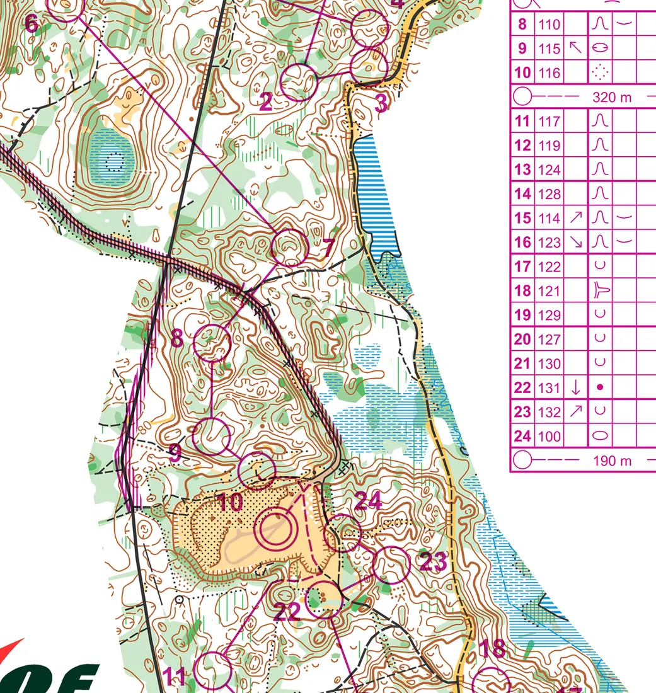
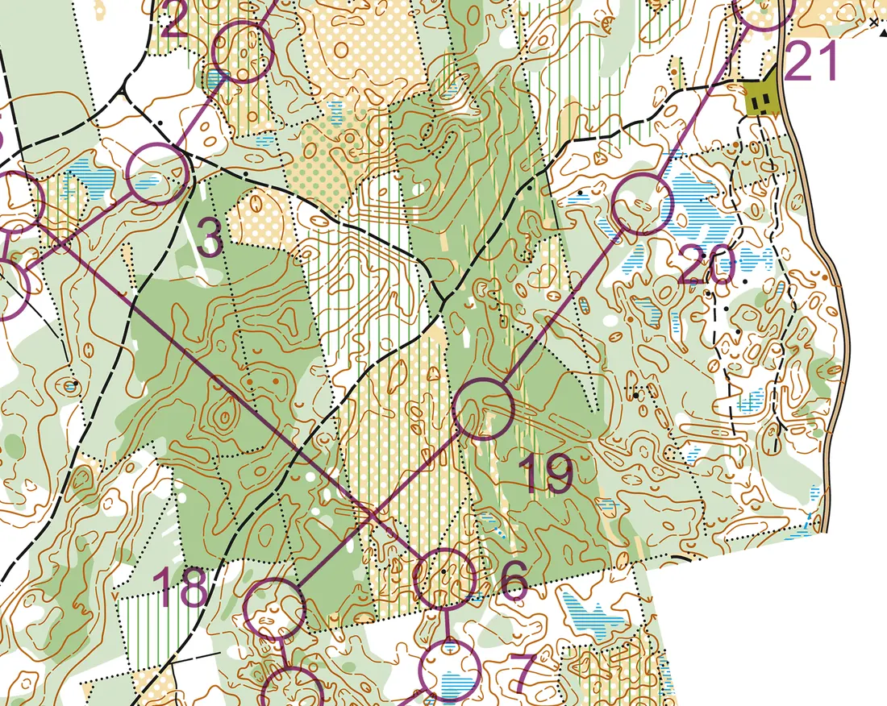
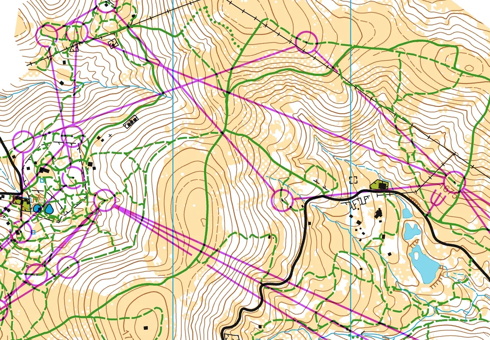
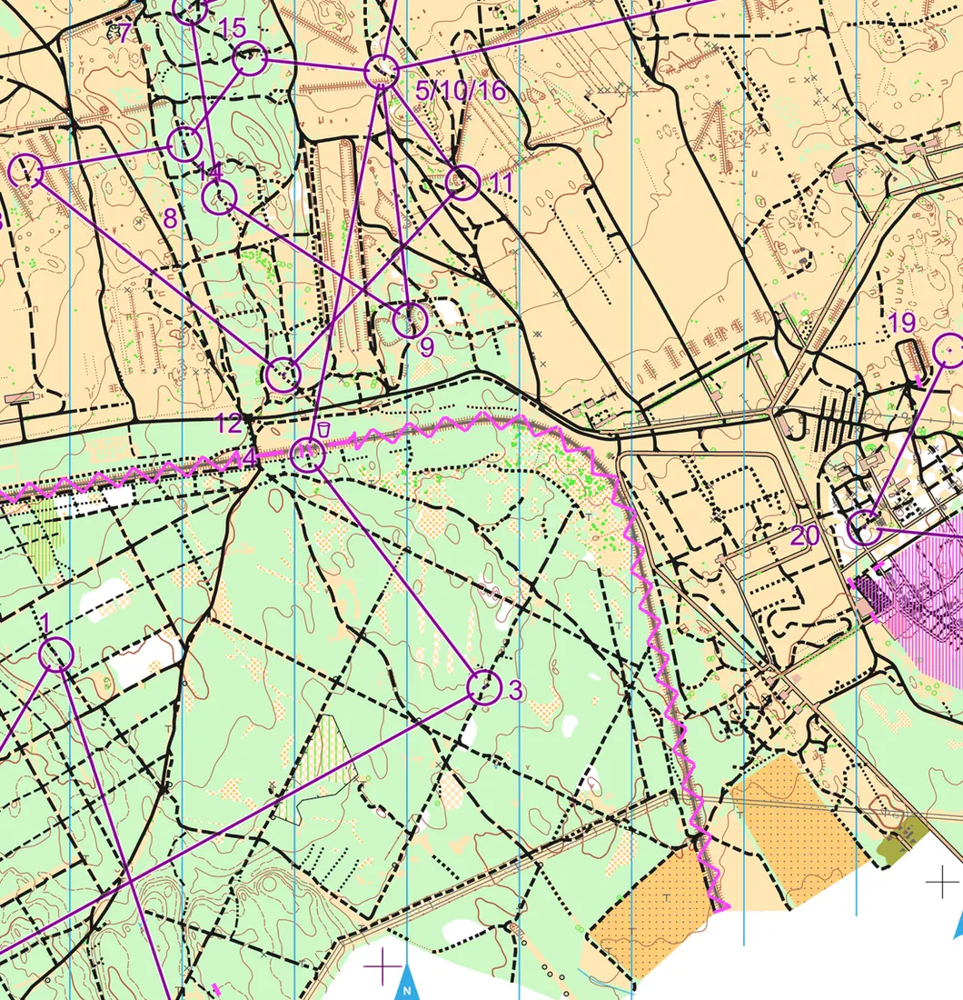
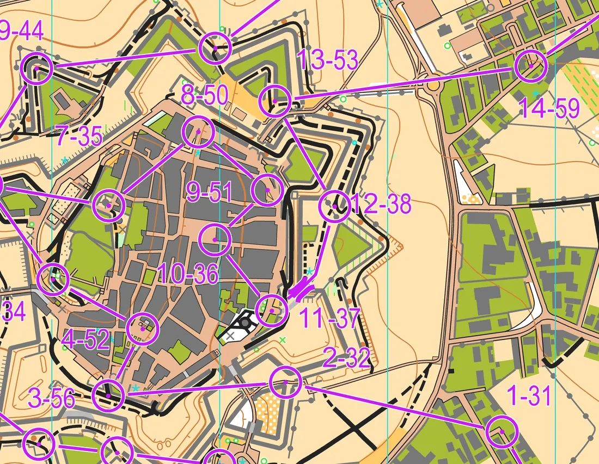

Шесть чемпионатов IOF
Международная федерация ориентирования (IOF) проводит чемпионаты мира и Европы в трёх дисциплинах: ориентирование бегом, на лыжах и на велосипедах. В календаре O-Maps собраны все эти чемпионаты — с протоколами, картами, GPS-трансляциями и видео. Эти статьи рассказывают, как менялись соревнования, кто в них побеждал и какие старты стали поворотными.

Чемпионаты мира (WOC)
С 1966 года: от двух комплектов медалей до нокаут-спринта. Нигли, Жоржу, Туве Александерссон и золотое десятилетие сборной России.

Чемпионаты Европы (EOC)
Старейший старт IOF: Лётен-1962, 36-летний перерыв, возвращение в 2000 году и первая спринт-эстафета, выигранная россиянами.

Лыжи: чемпионаты мира (SKI-WOC)
С 1975 года: два КП на 13,8 км, восемь золотых медалей России из восьми в 2007-м, допинговый скандал и эра Йоргена Баклида.

Лыжи: чемпионаты Европы (SKI-EOC)
С 2001 года: Вологда, Иваново, Тюмень, Ханты-Мансийск — и десять личных титулов Татьяны Власовой.

Велосипед: чемпионаты мира (WMTBOC)
С 2002 года: Фонтенбло, Балларат, Бен-Шемен; эпоха Руслана Грицана и Антона Фолифорова.

Велосипед: чемпионаты Европы (EMTBOC)
С 2006 года: чемпионат 2011 года в Ленинградской области, победы Ольги Шипиловой-Виноградовой и спринт в звёздной крепости Алмейды.